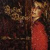

Celtic Lyrics Corner > Artists & Groups > Ashley Davis > Closer To You > Just For A While
|  | Just For A While |
| Credits : | Ashley Davis |
| Appears On : | Closer To You |
| Language : | English |
Lyrics :
Just for a while I will go my way
Into the night of another day
Follow your shadow through the dawn
Stay by you until the morn
I'll walk the rose path, timeless miles to go
Just for a while
Just for a while I will walk beside you
To feel the days inside us move
To a time when velvets made our bed
Passing days, our only dread
I will brook the repeating trials to go
Just for a while
Moonlit dances in torch-lit gardens
The come of morn our only warden
That is where I'm to be
When this time sets me free
Just for a while I will speak your name
Not hear it echo throughout my day
Slip my words inside your heart
Dance as if I've known the part
Open my mouth to drink your smile, I will go
Just for a while
Twilight floating, I am leaving
Amid the dreams I am weaving
This, the road I know so well
How far I go, time will tell
Just for a while I will stay with you
And find a way to our path of truth
Float like Ophelia, spin like Elaine
These are the ones who conquered the rain
I will sail the trodden days gone by as I go
Just for a while
Just for a while...